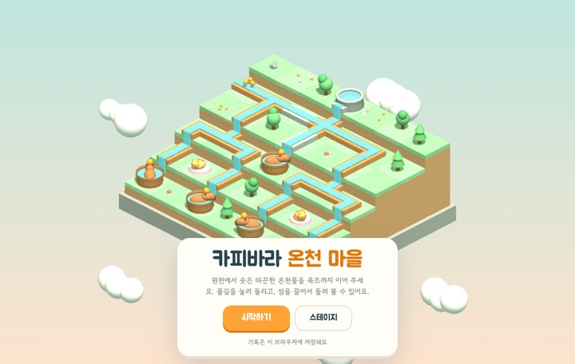
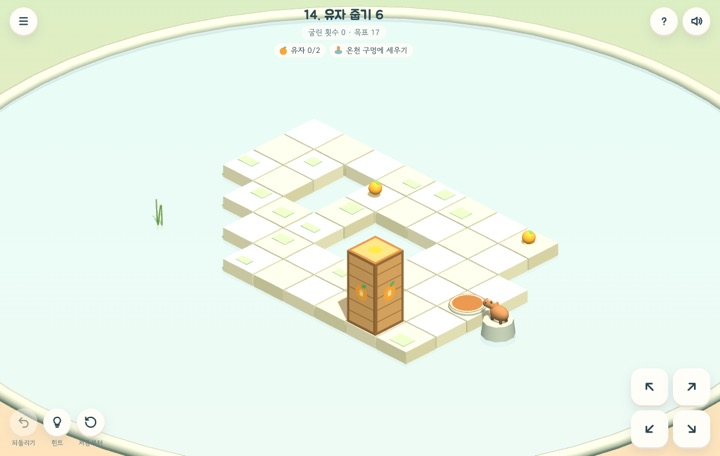
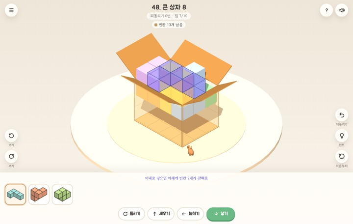
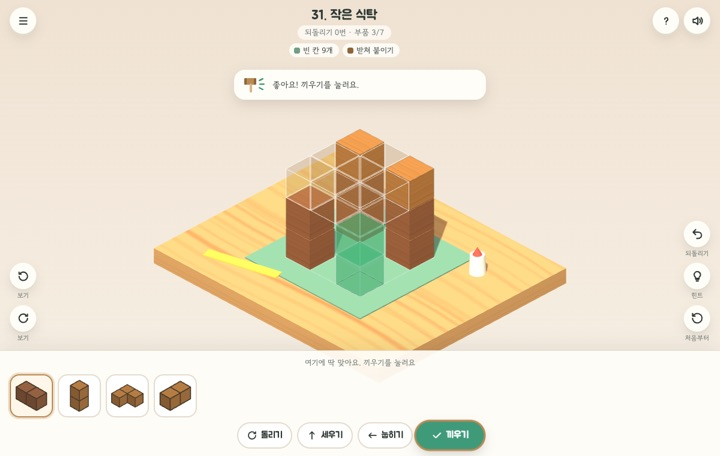
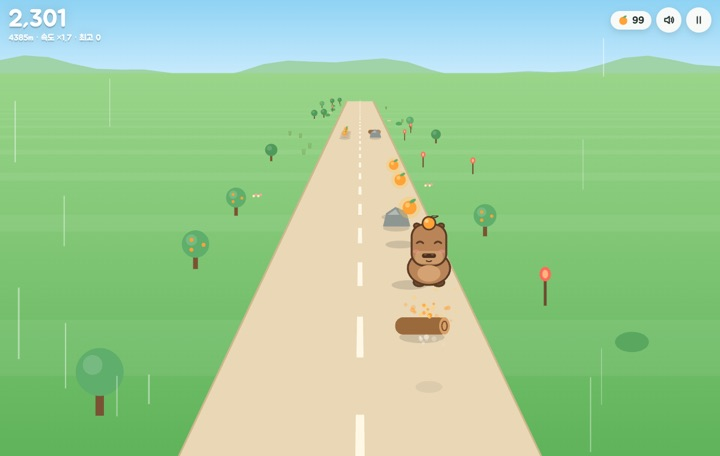
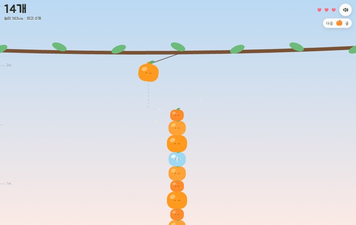
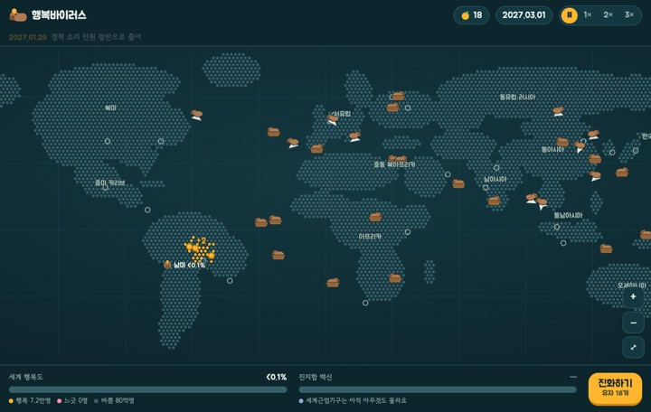

카피바라 온천 마을
물길을 돌려 온천물을 카피바라 욕조까지 이어 주세요. 마을마다 수문, 낙엽, 얼음, 구름 같은 새 물길이 기다려요.
플레이
데굴데굴 귤 상자
길쭉한 귤 상자를 굴려 온천 구멍 위에 똑바로 세워 주세요. 떨어지지 않으니 마음껏 굴려 봐도 돼요.
플레이
카피바라 이삿짐
짐을 돌려 모양을 맞추고 상자를 빈틈없이 채워 주세요. 그릇, 책, 잠든 고양이가 순서를 바꿔 놓아요.
플레이
작은 공방
나무 부품을 돌려 맞춰 설계도대로 끼우면 작은 모형이 완성돼요. 집, 등대, 풍차까지 100가지 작품이 있어요.
플레이
카피바라 대시
탭 한 번으로 두 갈래 길을 오가며 장애물을 피해요. 점프대로 장애물 줄을 훌쩍 넘고, 로켓을 먹으면 장애물을 골라 부수며 질주해요.
플레이
유자 쌓기
흔들리는 가지에서 과일을 떨어뜨려 카피바라 머리 위에 쌓아요. 탑이 기울면 카피바라를 움직여 균형을 잡아요.
플레이
카피바라 행복바이러스
세계근엄기구가 진지함 백신을 완성하기 전에 온 인류를 느긋하게 만드세요.
플레이